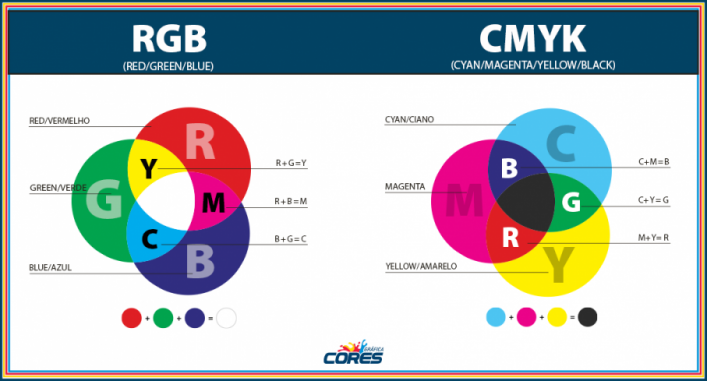
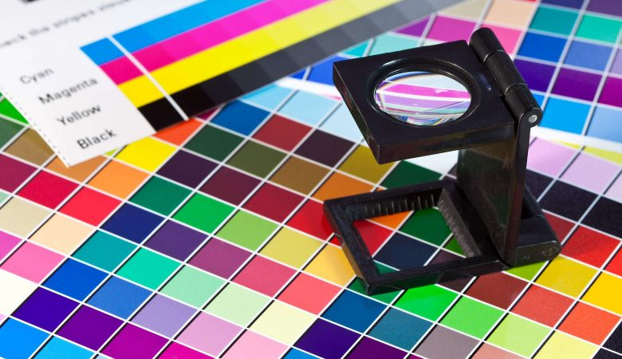
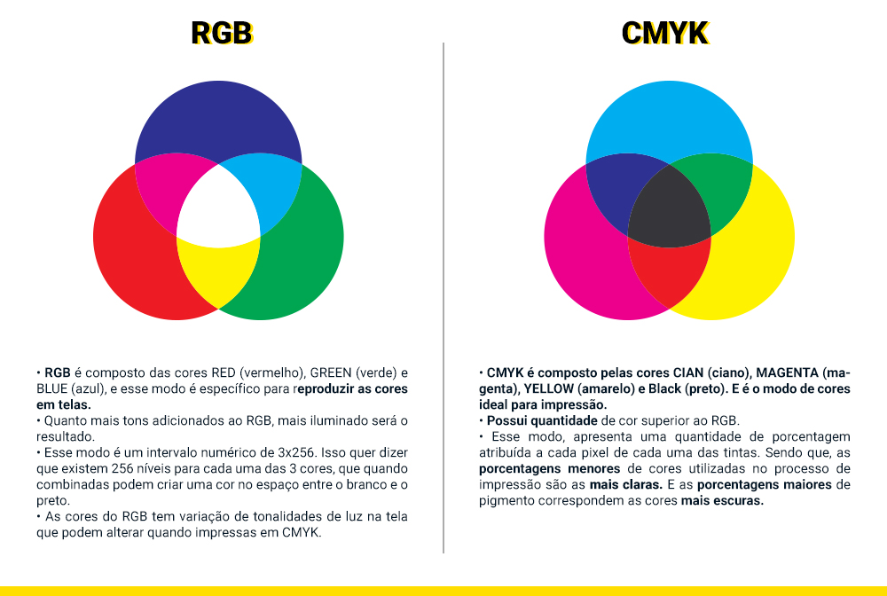

O RGB e o CMYK
Enquanto o RGB é formado pela adição de luz, o CMYK funciona pela subtração da luz...
O RGB e o CMYK são formados pelas cores:
- Red, green e blue (vermelho, verde e azul) para o RGB e Cian, Magenta, Yellow e Black (ciano, magenta, amarelo e preto) para o CMYK2
O sistema de cores CMYK é empregado por impressoras e fotocopiadoras para reproduzir a maior parte das cores, conhecido como quadricromia. Ciano, magenta, amarelo e preto são as quatro cores que determinam esse padrão e têm a capacidade formar uma série de outros tons a partir da subtração de luz. o RGB é um sistema aditivo em que as cores primárias são Vermelho, Verde e Azul (Red, Green e Blue), utilizado na formação de luzes em monitores e eletrônicos emissores.
CMYK
Baseado nessa dinâmica natural do funcionamento do CMYK.
Já aprendemos sobre o funcionamento da luz no pixel, mas nem tudo no mundo é pixel! Por isso precisamos de outro método também: o CMYK.
Já a cor pigmento se refere a cor refletida por um objeto, isto é, a cor que o olho humano percebe. A tinta é a substância na qual pigmentos são concentrados e usados para imitar o fenômeno da cor-luz. O pigmento surge extraído da natureza, em materiais de origem vegetal, animal ou mineral.
O sistema de cores CMYK é uma cor pigmento. As cores pigmento, como o nome sugere, são formadas de pigmentos sólidos que quando sobrepostos tendem a ficar cada vez mais escuros. Isso acontece porque a cor que vemos é apenas um reflexo da luz que incide sobre o pigmento, e uma vez sobrepostos esses pigmentos refletem menos luz, até haver uma ausência total dela, que é o preto. Essas quatro cores, são as mais importantes no mundo da impressão gráfica.
O método de representação de cores por CMYK é utilizado em impressões, tintas e tecidos. Uma folha em branco não tem pixel! Precisamos misturar pigmentos ao invés de luzes (como no RGB). Dessa forma estamos "bloqueando" certas cores da luz refletiva. Por isso esse método é chamado de subtrativo.
CMYK vem de Cyan (a cor ciano), Magenta, Yellow (amarelo) e K pode ser Key ou blacK . De certa forma, o CMYK tem alguma relação com o sistema RGB da seguinte maneira:
- O ciano absorve o vermelho. Similar ao rgb(0, 255, 255)
- O magenta absorve o verde. Similar ao rgb(255, 0, 255)
- O amarelo absorve o azul. Similar ao rgb(255, 255, 0)
Teóricamente, se misturar a mesma quantidade de pigmentos ciano, magenta e amarelo resultaria em preto. No entanto, na prática não é bem assim que funciona: fica um marrom bem escuro, mas ainda não é preto. Para obter um preto intenso, adicionamos a tinta preta. O k representa a tinta preta (“key” ou blacK).
CURIOSIDADE:O acrônimo CMYK têm a letra “K” no final em vez de “B” (para “black“) por dois motivos: um deles é por causa que, no passado a chapa que continha a cor preta era chama de “key plate” ou “chapa chave” pois era geralmente a chapa com maior detalhe artístico ou “informações chave”.
RGB
Princípios do RGB
O RGB é um sistema de cores aditivo, ou seja, que adiciona cores para formar novas cores.
Cada cor é formada pela combinação de intensidades variáveis das três cores primárias.
As cores RGB são exibidas em um intervalo entre 0 e 255. Quando divididas, as cores RGB podem gerar mais de 16 milhões de cores. Aplicações do RGB.

- O RGB é essencial para a exibição precisa e vibrante de imagens e vídeos.
- O RGB é usado em iluminação.
- O RGB é usado em várias aplicações industriais e científicas onde a reprodução precisa das cores é fundamental.
RGB ou CMYK?
RGB é ideal para telas e dispositivos digitais, como monitores, TVs e celulares.
CMYK é utilizado para impressoões, fabricações de tintas e tecidos, como cartazes, adesivos e materiais 